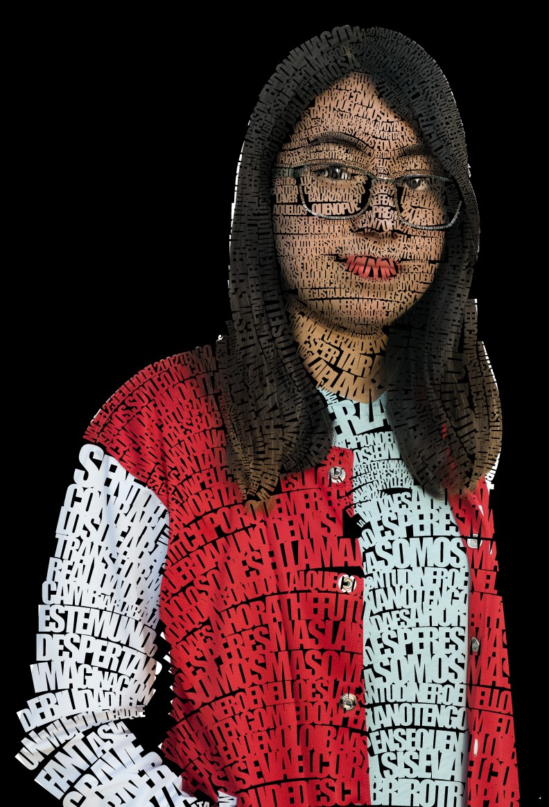

Este es un sitio personal, para recordarme mi paso por mi carrera, los trabajos que realice y las experiencias que tuve a lo largo de ella. Cuando me gradúe, quiero visitar este sitio y recordar todas las fases por las que tuve que pasar para lograr la meta de terminar la carrera.
No ha sido fácil, pero lo que he logrado hasta ahora, me mantiene firme y orgullosa de todo el esfuerzo y tiempo que le he dedicado.
Aún falta mucho camino por recorrer, pero sé que al final valdrá la pena todo lo que he trabajado.
A lo largo de la carrera he realizado muchos trabajos de manera digital y análoga, muchos de estos trabajos, me han dejado muchas enseñanzas y sobre todo experiencias a la hora de realizarlos. Algunos de ellos, involucraron muchas horas de trabajo y unos otros involucraron salir de casa para poder concluirlos.
Estos trabajos decidí clasificarlos en los más importantes o más significativos de cada trimestre y los que más me ha gustado hacer.
